| Tâche professionnelle | Actes de langage | Composante sociolinguistique et socioculturelle | Composante linguistique |
|---|---|---|---|
| Élaborer un poster scientifique pour présenter des données chiffrées |
|
|
Morphologie Conditionnel présent, Imparfait Syntaxe
Lexique des données chiffrées Lexique thématique lié au développement humain Orthographe L'écriture des chiffres en lettres Phonie-graphie Les voyelles nasales/la nasalisation |
| 1er indice | 2e indice | 3e indice |
|---|---|---|
Que représentent les indices ?
Que vous évoquent-ils ?
À votre avis, qu'allons-nous faire aujourd'hui ?
Glissez-déposez chaque compétence dans la colonne correspondante :
| Je sais déjà | Je vais apprendre à |
|---|---|
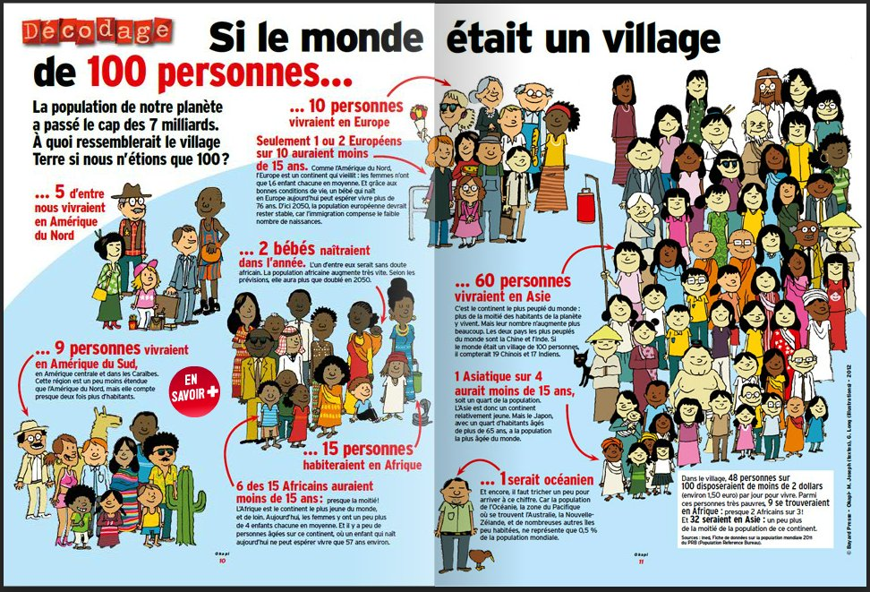
Source : Le petit quotidien, Bayard presse
| À votre avis : | Réponses |
|---|---|
| 1. Quel est le genre du document ? | Document 1 : Une affiche, un flyer, un poster, un article de presse… Document 2 : Un spot publicitaire, une capsule vidéo, une page Internet… |
| 2. De quoi est constitué le document ? | 1. D'un mot en relief, d'un gros titre, d'un sous-titre, de paragraphes, d'illustrations, de données chiffrées, d'un encadré. 2. D'un logo, d'une barre de navigation, de l'image fixe d'un écran qui présente la mappemonde, d'un titre, d'une date, d'une barre latérale. |
| 3. Quelle est la source du document ? | 1. Bayard Presse 2. Explore média |
| 4. À qui s'adresse le document ? | 1. Large public de jeunes 2. Large public |
| 5. De quoi est-il question dans le document ? | 1. De la planète, de la population mondiale, de la répartition de la population 2. De la planète et de la population mondiale |
| 6. Quelle est la finalité de la publication ? | 1. Informer 2. Informer |
| 7. Dans quelle mesure les informations contenues dans le document sont fiables ? | 1. Elles sont sourcées et semblent vérifiables, car provenant d'une publication. 2. Elles sont sourcées et semblent vérifiables du fait de la biographie finale. |
| Questions | Réponses corrigées |
|---|---|
| 1. Quel est le genre du document ? | 1. La double-page d'un magazine. 2. Une capsule vidéo. |
| 2. De quoi est-il constitué ? | 1. Intégré à la rubrique « Décodage » qui traite de « sujets de société, sport, santé, métiers, économie… décodés grâce aux images et à des textes clairs », le document est composé d'un gros titre « Si le monde était un village de 100 personnes… », d'un sous-titre « La population de notre planète a passé le cap de 7 milliards. À quoi ressemblerait le village Terre si nous n'étions que 100 ? », de paragraphes introduits par la deuxième partie de la phrase constituant le gros titre, d'illustrations de personnages d'origines variées, de données chiffrées concernant la population mondiale ramenée à 100, d'un encadré pour une mise en relief. 2. Une voix off qui commente des données chiffrées illustrées concernant la population mondiale ramenée à 100. |
| 3. Quelle est la source du document ? | 1. Magazine Okapi de Bayard Presse : il s'agit d'un magazine pour les 10-15 ans. 2. Explore média : média social français dédié aux sciences, à l'innovation et à la découverte, qui propose des capsules vidéo pour les réseaux sociaux qui attirent de très nombreux internautes et plus particulièrement le jeune public. |
| 4. À qui s'adresse le document ? | 1. Large public de préadolescents 2. Large public d'internautes, notamment préadolescents |
| 5. De quoi est-il question dans le document ? | 1. De la population mondiale et des inégalités 2. De la population mondiale et des inégalités |
| 6. Quelle est la finalité de la publication ? | 1. Informer de manière factuelle et objective 2. Informer de manière à sensibiliser, à attirer l'attention, à alerter |
| 7. Dans quelle mesure les informations contenues dans le document sont-elles fiables ? | On peut accorder une certaine crédibilité aux données partagées : 1. Bayard Presse, organisme de presse, et Okapi, publié par cet organisme, sont reconnus pour leur professionnalisme par le grand public et dans le milieu éducatif. 2. La biographie indique des références institutionnelles telles que les sites de la CIA, des Nations unies, l'Organisation mondiale de la Santé. Explore média rencontre un succès grandissant, gagne la confiance du public, d'autres médias et d'organismes privés et publics. Des contenus ludo-éducatifs, diversifiés, enrichissants et intelligents, consacrés à la découverte du monde, à la vulgarisation scientifique, à l'histoire, aux animaux, aux phénomènes naturels… qui permettent de s'évader en se cultivant ! |
| Colonne A | Réponse | Colonne B |
|---|---|---|
| 1- Les inégalités géographiques, économiques et culturelles s'accumulent, | a- malgré la baisse de la natalité. | |
| 2- La population en Europe devrait rester stable, | b- alors que la population restante se répartit sur le reste du monde. | |
| 3- La population mondiale continue de s'accroître, | c- car le taux de natalité est élevé et l'espérance de vie est assez faible. | |
| 4- L'Afrique est le continent le plus jeune | d- d'ici à 2050, nous serons presque 10 milliards. | |
| 5- 41 % de la population peuple la Chine, l'Inde et les États-Unis, | e- par conséquent, les tensions se font plus vives entre les populations et la qualité de la vie mondiale est très inégale selon les pays |
| Affirmation | Vrai | Faux | Justification |
|---|---|---|---|
| La planète n'a pas encore dépassé les 7 milliards. | « La Terre compte plus de 7,5 milliards d'habitants. » | ||
| L'espagnol est une des deux langues les plus parlées dans le monde après le chinois. | « La langue la plus parlée dans le monde est sans surprise le mandarin. Elle est la langue maternelle de 12 personnes, suivie de très loin par l'espagnol et l'anglais… » | ||
| Une personne sur 100 décède par manque de nourriture et plus de 20 personnes souffrent de surpoids dans le monde. | « [...] 1 meurt littéralement de faim alors que 26 sont en surpoids. » | ||
| Les personnes possédant le niveau Bac+3 touchent un salaire deux fois plus élevé que les personnes sans diplôme. | « Les personnes possédant un niveau bac + 3 gagneraient 70 % de plus que celles sans diplôme, et leur espérance de vie serait également augmentée. » | ||
| Plus de la moitié des personnes ont accès à des installations pour l'hygiène corporelle. | « [...] 60 personnes [sur cent] ont accès à des sanitaires. » | ||
| Les hommes se chargent d'approvisionner les ménages en eau. | « Dans les pays émergents, les femmes sont majoritairement responsables de l'approvisionnement en eau. » | ||
| 1 seule personne possède un peu moins de 30 % de la richesse mondiale. | « 1 seule personne possède plus d'un million de dollars. À elle seule, cette personne possède près de 50 % de la richesse mondiale. » |
Infographie à compléter (cliquez pour agrandir) :
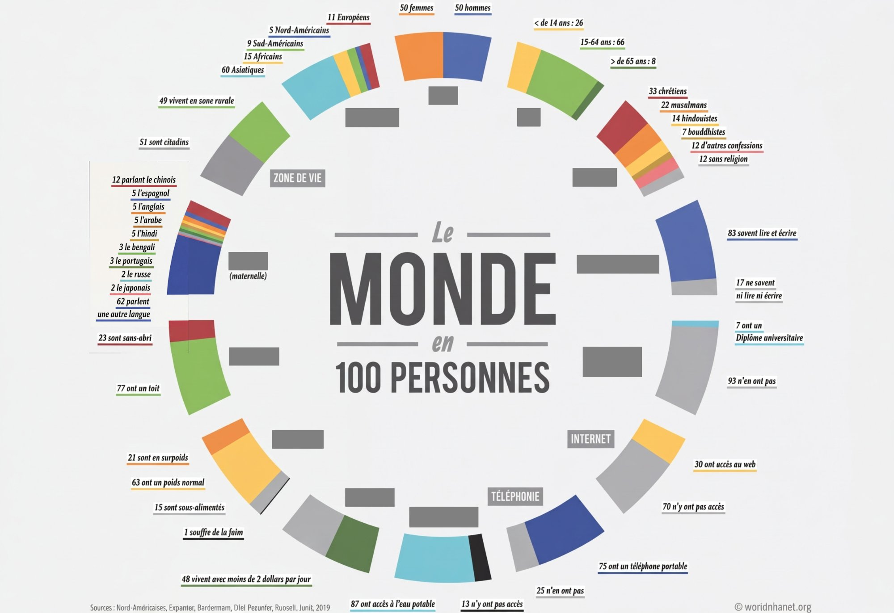
Auteur : Jack Hagley, infographie réalisée en 2012
Source : http://wiki.coop-tic.eu/wikis/EACSI/wakka.php?wiki=SileMondeetaitunvillagedecent
Corrigé (cliquez pour agrandir) :
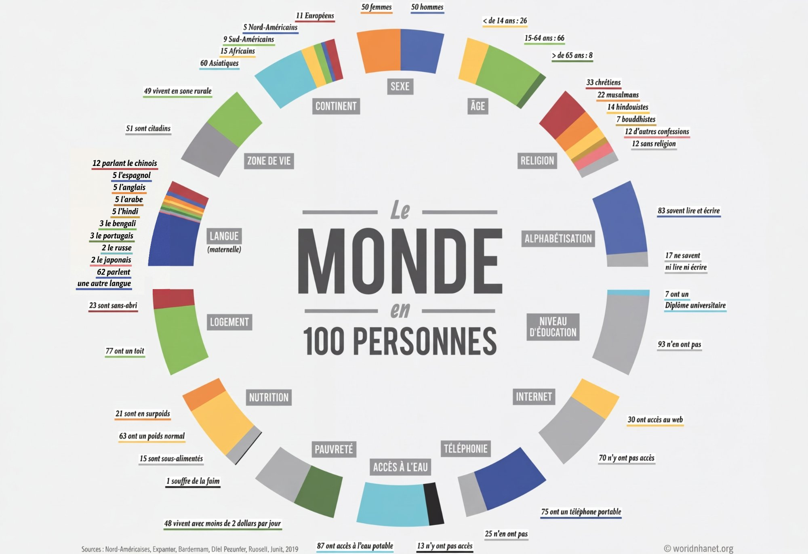
Chaque équipe a reçu ses 3 questions.
Actuellement, la Terre compte plus de 7,5 milliards d'habitants, répartis sur 197 pays, parlant plus de 7 000 langues différentes.
Ces dernières années, les tensions se font plus vives entre les populations. Les inégalités s'accumulent, qu'elles soient géographiques, économiques ou culturelles.
Et, la population mondiale continue de s'accroître. D'ici à 2050, nous serons presque 10 milliards. Pour y voir plus clair, réduisons l'ensemble des 7,5 milliards qui habitent la Terre à juste 100 personnes.
Sur 100 personnes, 50 seraient des femmes et 50 des hommes. La plupart vivraient en Asie, soit 60 personnes contre 16 en Afrique, 10 en Europe, 8 en Amérique du Nord et 5 en Amérique du Sud. Une seule personne seulement occuperait l'Océanie tout entière.
La Chine est le pays le plus peuplé du monde, abritant à lui seul 19 habitants, suivie de près par l'Inde avec ses 18 habitants. Les États-Unis arrivent en 3ᵉ position, avec seulement 4 personnes. Les 59 restantes se répartissent sur presque 190 pays. La majorité d'entre eux est très jeune, 25 ont moins de 14 ans et 32 de 15 à 34 ans, ce qui fait déjà plus de la moitié de la population. 17 seulement ont plus de 55 ans.
La langue la plus parlée dans le monde est sans surprise le mandarin. Elle est la langue maternelle de 12 personnes, suivie de très loin par l'espagnol et l'anglais avec 5 personnes chacune. Les 78 restantes parlent plus de 7 000 langues différentes. La Francophonie est présente dans 84 pays, répartis sur tous les continents. Le français est parlé par 4 personnes dans le monde. Cette diversité se retrouve également dans les religions pratiquées. Dans notre groupe de 100 personnes, 31 sont chrétiennes, 23 musulmanes, 15 pratiquent l'hindouisme et 7 sont bouddhistes. 15 d'entre elles ne sont affiliées à aucune religion. Les centaines de religions restantes ne sont représentées que par seulement 9 personnes.
La qualité de vie mondiale est très inégale selon les pays. Sur nos 100 personnes, 21 n'ont pas accès à une habitation décente et 1 personne est sans abri. 17 vivent sans électricité, mais les inégalités ne s'arrêtent pas là puisque seulement 60 personnes ont accès à des sanitaires. Sur les 40 autres, 15 doivent faire leurs besoins dans la nature. 8 de nos 100 habitants n'ont pas accès à une source d'eau potable. Dans les pays émergents, les femmes sont majoritairement responsables de l'approvisionnement en eau. En l'absence d'infrastructures adéquates, elles peuvent passer jusqu'à 6 heures par jour à s'approvisionner en eau, ce qui nuit à leur développement personnel et à leur indépendance. Mais, l'eau n'est pas la seule ressource dont certains sont privés.
11 personnes ne mangent pas à leur faim et sont en sous-nutrition. 1 meurt littéralement de faim alors que 26 sont en surpoids.
Entre nos 100 habitants, la richesse est répartie de façon très inégale. 70 d'entre eux possèdent un capital de moins de 10 000 dollars. 1 seule personne possède plus d'un million de dollars. À elle seule, cette personne possède près de 50 % de la richesse mondiale alors que les 70 les plus pauvres n'en possèdent que 3 %.
L'accès à l'éducation et à l'emploi peut expliquer ces inégalités dans la répartition des richesses puisque chez les personnes en âge d'être actives, 9 sont au chômage. 14 personnes ne savent ni lire, ni écrire et 2/3 d'entre elles sont des femmes. Ces différences se confirment dans les études supérieures puisque seulement 7 obtiennent un diplôme universitaire. Mais, ce chiffre a tendance à augmenter au fil des années puisque de plus en plus de personnes poursuivent des études secondaires. Les personnes possédant un niveau bac + 3 gagneraient 70 % de plus que celles sans diplômes, et leur espérance de vie serait également augmentée.
| Pour | Exemples extraits des documents |
|---|---|
| Formuler des hypothèses | Doc 1 :
- À quoi ressemblerait le village Terre si nous n'étions que 100 ?
- Si le monde était un village de 100 personnes… … 5 d'entre eux vivraient en Amérique du Nord … 9 personnes vivraient en Amérique du Sud … 10 personnes vivraient en Europe … 2 bébés naîtraient dans l'année … 15 personnes habiteraient en Afrique … 60 personnes vivraient en Asie
- 6 des 15 Africains auraient moins de 15 ans
- 1 Asiatique sur 4 aurait moins de 15 ans
- 1 serait océanien
Doc 2 (transcription) :
Et s'il n'y avait que 100 personnes sur Terre ?
Sur 100 personnes, 50 seraient des femmes et 50 des hommes. La plupart vivraient en Asie.
Une seule personne seulement occuperait l'Océanie tout entière. |
| Présenter et commenter des données chiffrées | Doc 1 :
- Notre planète a passé le cap des 7 milliards
- Seulement 1 ou 2 Européens sur 10 auraient moins de 15 ans.
- Les femmes n'ont que 1,6 enfant chacune en moyenne.
- La population africaine augmente très vite.
- C'est le continent le plus peuplé du monde : plus de la moitié des habitants de la planète y vivent.
- Dans le village, 48 personnes sur 100 disposeraient de moins de 2 dollars par jour pour vivre.
Doc 2 (transcription) :
La Terre compte plus de 7,5 milliards d'habitants, répartis sur 197 pays.
D'ici 2050, nous serons presque 10 milliards.
La Chine est le pays le plus peuplé du monde…
1 meurt littéralement de faim alors que 26 sont en surpoids. |
| Donner une explication | Doc 1 :
- Grâce aux bonnes conditions de vie, un bébé qui naît aujourd'hui peut espérer vivre plus de 76 ans.
- La population devrait rester stable, car l'immigration compense le faible nombre de naissances.
- Car la population de l'Océanie ne représente que 0,5 % de la population mondiale.
Doc 2 (transcription) :
- Les inégalités ne s'arrêtent pas là puisque seulement 60 personnes ont accès à des sanitaires.
- L'accès à l'éducation et à l'emploi peut expliquer ces inégalités puisque 9 sont au chômage.
- Ce chiffre a tendance à augmenter puisque de plus en plus de personnes poursuivent des études secondaires. |
| Exprimer la restriction | Doc 1 :
- Si nous n'étions que 100
- Un enfant qui naît aujourd'hui ne peut espérer vivre que 57 ans environ.
Doc 2 (transcription) :
- Une seule personne seulement occuperait l'Océanie tout entière.
- Les États-Unis arrivent en 3ᵉ position, avec seulement 4 personnes.
- 15 d'entre elles ne sont affiliées à aucune religion. Les centaines de religions restantes ne sont représentées que par seulement 9 personnes.
- 1 seule personne possède plus d'un million de dollars. À elle seule, cette personne possède près de 50 % de la richesse mondiale… |
| Pour | Je vais apprendre à utiliser | Je sais déjà utiliser |
|---|---|---|
| Formuler des hypothèses | - Si + imparfait + conditionnel | - si + présent + futur simple
- supposer que…
- il est possible que… |
| Présenter et commenter des données chiffrées | Données imprécises : environ, presque, en moyenne, plus de + donnée chiffrée, passer le cap de + donnée chiffrée
Données précises : un quart, la moitié, juste, une seule, chacun(e), les + nombre + restantes
Données statistiques : parmi, nombre + % de, donnée chiffrée + sur + donnée chiffrée
Données opposables : soit + chiffre + contre + chiffre, donnée chiffrée + alors que + donnée chiffrée
Données comparables : moins/peu/plus de + donnée chiffrée, plus que doublé, le plus/la plus + adjectif
Expressions verbales : augmenter, doubler, réduire, arriver en nᵉ position | La plupart
La majorité
Une minorité |
| Donner une explication | Cause à valeur positive : Grâce aux + nom féminin pluriel + GV
Cause à valeur générale : GV + , car + GV / Car + GV + GV
Cause connue ou évidente : GV + puisque + GV | Cause à valeur générale : GV + parce que + GV |
| Exprimer la restriction | À elle seule + GV
Sujet + ne + verbe + que + complément
Sujet + ne + verbe + aucune + complément | Seulement
Sauf si |
Selon, absence, dont, parlant, fin, langues, temps, certains, habitants, entre, moins, monde, entière, Inde, façon, différences, tendance, contre, restantes, continue, ensemble, entière, loin, anglais, francophonie, religion.
Exemple : bain – bon – banc → [ɛ̃]=1, [ɑ̃]=3, [ɔ̃]=2
| [ɛ̃] | [ɑ̃] | [ɔ̃] | |
|---|---|---|---|
| 1. ans – on – hein | |||
| 2. Inde – Andes – onde | |||
| 3. Temps – ton – teint | |||
| 4. Sont – sens – saint | |||
| 5. Vont – vain – vent | |||
| 6. L'un – lent – long | |||
| 7. Rein – rang – rond | |||
| 8. Dont – dans – d'un |
1/
2/
3/
4/
5/
On entend [ɑ̃], on écrit le plus souvent an ou en
| an | en |
|---|---|
On entend [ɛ̃], on écrit in, un, ain, ein
| in | un | ain | ein |
|---|---|---|---|
On entend [ɔ̃], on écrit on
| on |
|---|
Les graphies om, am, im, um, em s'emploient devant les consonnes b, m et p
| am | em | im | um | aim | om |
|---|---|---|---|---|---|
Et, si j'étais ministre, qu'est-ce que je ferais ?
Cartes à piocher
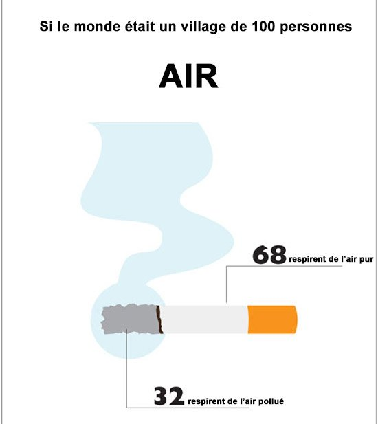
A. Si le monde était un village de 100 personnes, 68 personnes respireraient de l'air pur.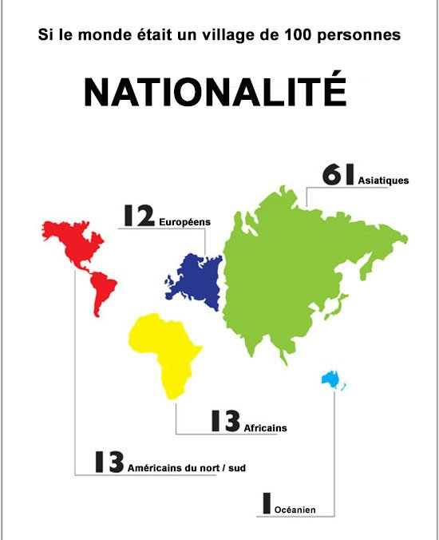
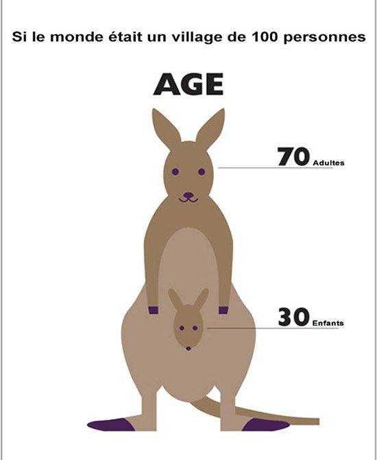
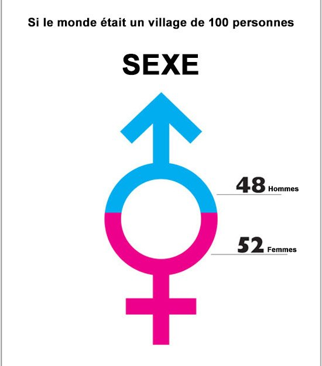
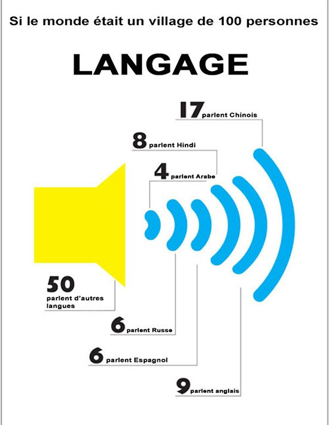
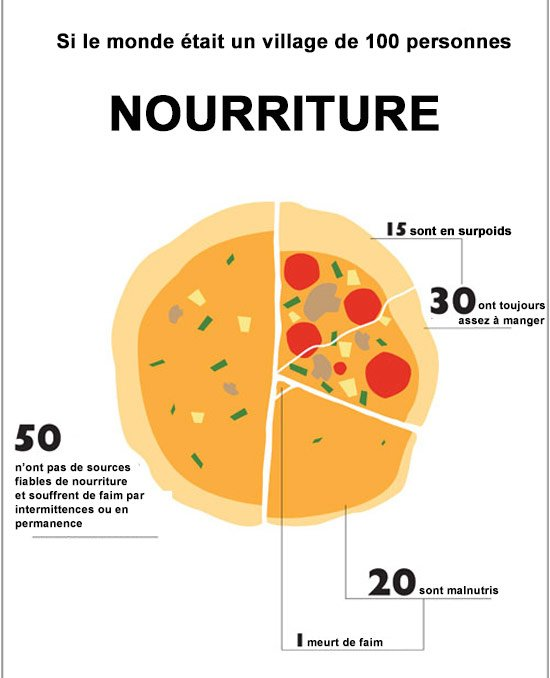
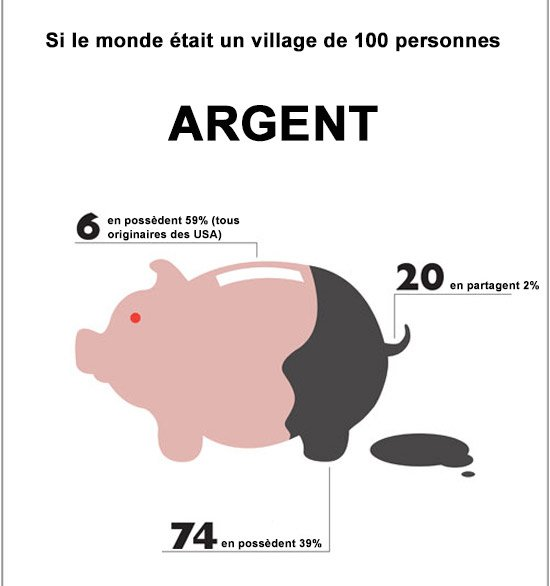
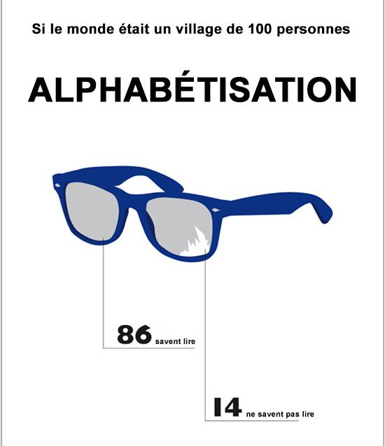
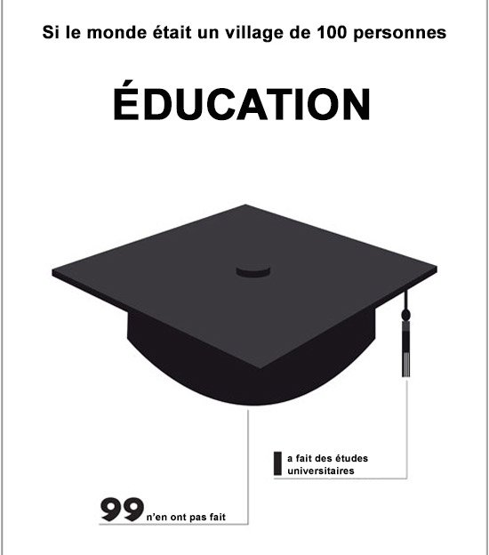
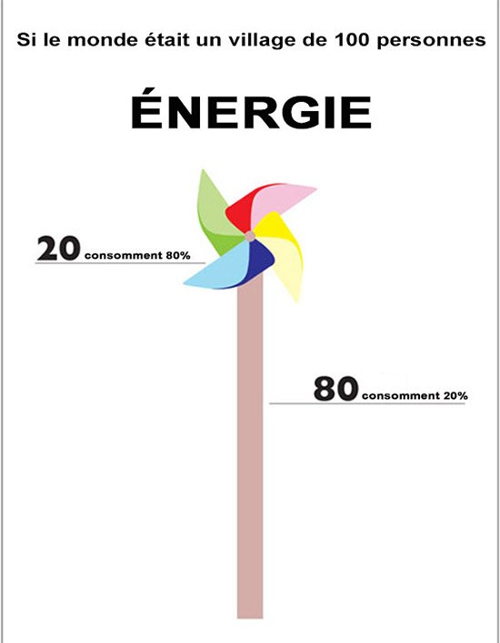
Source : https://www.out-the-box.fr/si-le-monde-etait-village-100-personnes/
À retenir (bescherelle.ca) :
TRAIT D'UNION : En orthographe moderne, on relie par un trait d'union tous les éléments d'un numéral composé, qu'il soit inférieur ou supérieur à cent, y compris s'il contient et.
Ex. : vingt-et-un (21), cent-trois (103).
MILLE : Le nombre mille est invariable ; il ne prend jamais de « s », même quand il est multiplié.
Ex. : deux-mille (2 000), dix-mille (10 000).
VINGT, CENT : Les mots vingt et cent prennent la marque du pluriel à trois conditions :
1) ils doivent être multipliés (cinq-cents = 5 × 100) ;
2) ils doivent terminer le nombre (quatre-vingts, mais quatre-vingt-sept) ;
3) ils ne doivent pas servir à indiquer le rang (deux-cents pages, mais la page deux-cent).
Ex. : cent-vingt (120) sans « s » car cent et vingt ne sont pas multipliés ; trois-cent-quatre-vingt-dix (390) sans « s » car ils ne terminent pas le nombre ; mais deux-mille-sept-cents ans (2 700) car cent est multiplié et en fin de nombre.
MILLION, MILLIARD : « Million » et « milliard » prennent un « s » au pluriel car ce sont des noms.
Ex. : deux millions, trois milliards.
1. Il y a une inégalité dans la répartition des richesses entre les hommes. Ils n'ont pas tous accès à l'éducation et à l'emploi.
2. La qualité de la vie mondiale est très inégale selon les pays. Les personnes n'ont pas accès à une habitation décente, ni à l'électricité.
3. Plusieurs personnes sont en sous-nutrition. Elles ne mangent pas à leur faim.
4. Les personnes ayant un Bac+3 gagnent plus que les autres. Elles ont un diplôme supérieur.
5. Le mandarin est la langue la plus parlée au monde. La Chine compte 1,412 milliard d'habitants.
1. Durée moyenne de la vie humaine dans une société donnée.
2. Rapport entre le nombre de décès et l'effectif moyen de la population dans un lieu donné et pendant une période déterminée.
3. Rapport entre le nombre des naissances et le chiffre de la population.
4. Rémunération d'une activité (profit) ou d'un travail (salaire).
5. Possibilité pour quelqu'un, pour un groupe, d'accéder à quelque chose.
6. Actes thérapeutiques qui visent à la santé d'une personne, de son corps.
7. Action de scolariser ou fait d'être scolarisé.
8. Mise en œuvre des moyens propres à assurer la formation et le développement d'un être humain.
9. Fait de croître, de grandir.
10. Milieu géographique et social formé par une réunion importante de constructions abritant des habitants qui travaillent, pour la plupart, à l'intérieur de l'agglomération.
11. Absence d'égalité.
Saisie en majuscules, sans accents ni espaces.
Un poster doit être :
Attractif : Le titre doit attirer le lecteur, les informations doivent être présentées de la manière la plus graphique possible.
Structuré : Le lecteur doit être guidé dans sa lecture : identifier les différentes parties (par des titres, des numéros de section, des couleurs…).
Concis : Le texte doit être clair et précis, les phrases courtes, la police adaptée (pas en majuscule…). Les « plages » blanches sont importantes. L'idéal est de mélanger 30 % de texte, 40 % d'illustrations et 30 % de vide. N'abusez pas des couleurs qui affaiblissent la lisibilité…
Pour concevoir le poster, se souvenir qu'il doit être :
- un résumé des recherches que vous avez faites ;
- une image qui donne envie de s'approcher ;
- un spectacle pour le lecteur qui s'y arrête 5 minutes maximum ;
- un message qui cherche à convaincre le lecteur.
3 étapes pour réaliser le poster :
1) le « scénario » : Définir : le contenu, la problématique, les grandes parties de l'argumentation
2) le story-board : définir les pavés de textes, les documents graphiques, la trame graphique c'est-à-dire la mise en page du poster.
3) la réalisation
Source : pedagogie.ac-strasbourg.fr
| Région de… | Nombre sur 100 |
|---|---|
| Nombre de personnes vivant en ville | |
| Nombre de personnes scolarisées | |
| Nombre de personnes analphabètes | |
| Nombre de personnes en activité | |
| Nombre de personnes au chômage | |
| Nombre de personnes bénéficiant de l'électricité | |
| Nombre de personnes ayant accès à l'eau potable |
| Critères d'évaluation | Oui | Partiel. | Non |
|---|---|---|---|
| Composante pragmatique | |||
| L'objectif principal est atteint : élaborer un poster scientifique pour présenter des données chiffrées. | |||
| Le discours est cohérent. | |||
| Les actes de langage indispensables pour réaliser la tâche sont maîtrisés : - Formuler des hypothèses - Présenter et commenter des données chiffrées - Donner une explication - Exprimer la restriction | |||
| Composante sociolinguistique et socioculturelle | |||
| La méthodologie pour concevoir un poster scientifique est respectée. | |||
| Le rituel de présentation d'un exposé est respecté. | |||
| Le registre de langue standard utilisé est en adéquation avec la situation de communication. | |||
| Composante linguistique | |||
| Le lexique des données chiffrées et le lexique lié au développement sont utilisés de manière appropriée. | |||
| Les verbes sont conjugués aux temps qui conviennent (imparfait, conditionnel présent). | |||
| Les structures nécessaires sont utilisées de manière appropriée (hypothèse, cause, restriction). | |||
| L'écriture des chiffres en lettres est maîtrisée. | |||
| La distinction des voyelles nasales est maîtrisée et la nasalisation est réalisée de manière appropriée. | |||